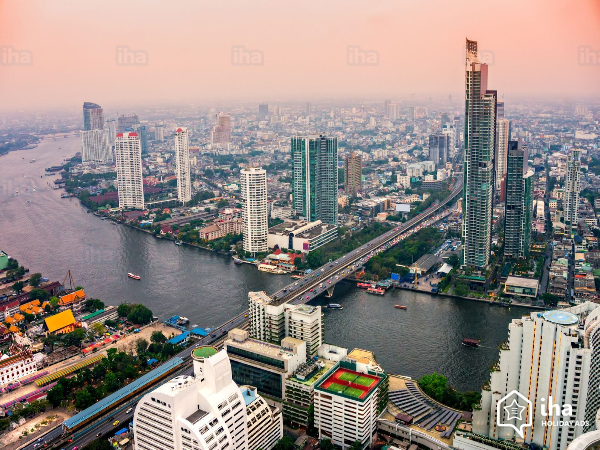

Land of Smiles: Bangkok
At-a-Glance
Capital city of Thailand
Nicknames: Venice of Asia, City of Angels, Divine City
Location: In the Chao Phraya River basin. The region is also known as the "Rice Bowl of Asia"
The city is the center of Thailand's economy being the country's principal port as well as its financial center
Population: 8.281 million (2017)
Currency: the baht
Time Zone: GMT+07:00 (Greenwich Mean Time)
Airport: Suvarnabhumi International Airport
Transportation: Sky train, express boat service, tuk-tuks, cabs, bus service
Subtropical with temperatures ranging from an average of 25 degrees Celsius (77 degrees Fahrenheit) in December to 30 degrees Celsius (86 degrees Fahrenheit) in April
Best time to travel: During "cool" season when there's the least rainfall( Between November & March)